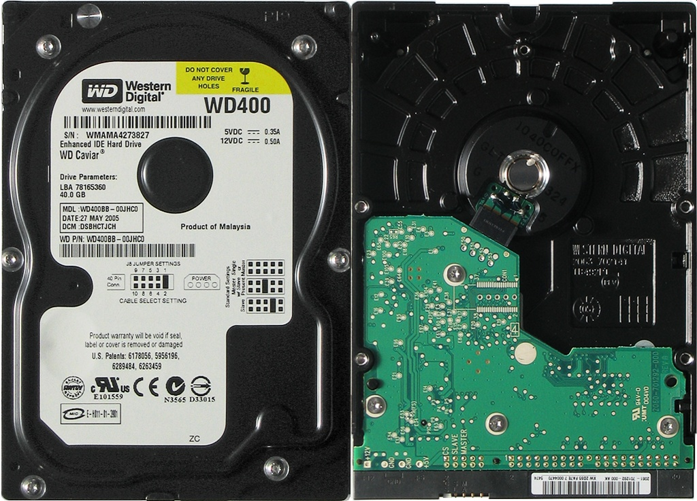

BUDOWA KOMPUTERA
DYSK
Co to w ogóle jest ? Dysk/nośnik danych to przedmiot fizyczny, na którym możliwe jest zapisanie informacji i z którego możliwe jest późniejsze odczytanie tej informacji. Pojęcie nośnika danych / dysk jest ściśle związane z informatyką i
komputerami, choć definicja powyższa nie wyklucza uznania za nośnik danych na przykład kartki papieru.
Nośnik danych można też zdefiniować jako medium dla danych, w celu ich przechowywania, przetwarzania i transmisji.
Każdy
nośnik danych charakteryzuje określona gęstość zapisu, wynikająca z jego właściwości fizycznych.
źródło: https://pl.wikipedia.org/wiki/No%C5%9Bnik_danych
* - nie wymagane ale zalecane
** - nie wymagane ale umorzliwiają korzystanie z komputera w przyjemny i łatwy sposób (najlepsze do użydku domowego)
strona jest obięta prawami autorskimi © WSZELKKIE PRAWA ZASTRZERZONE